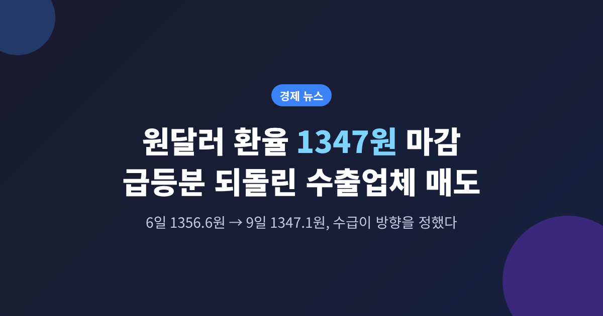
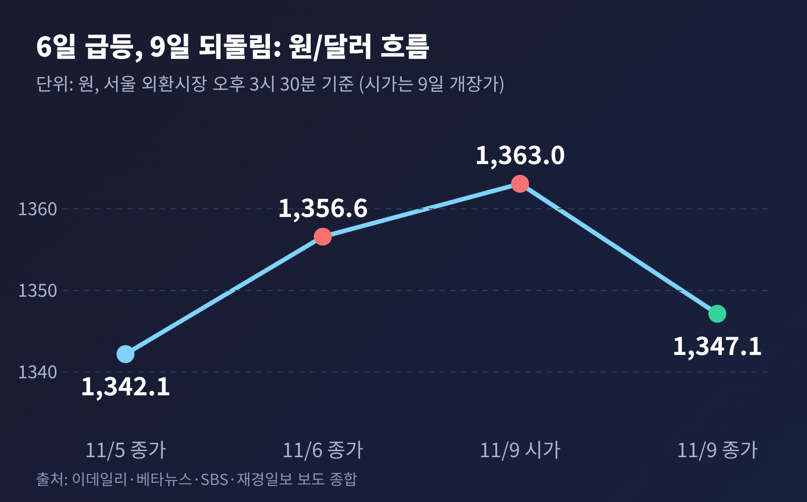
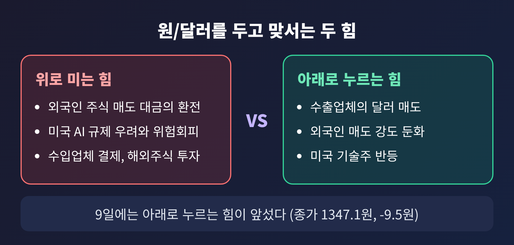
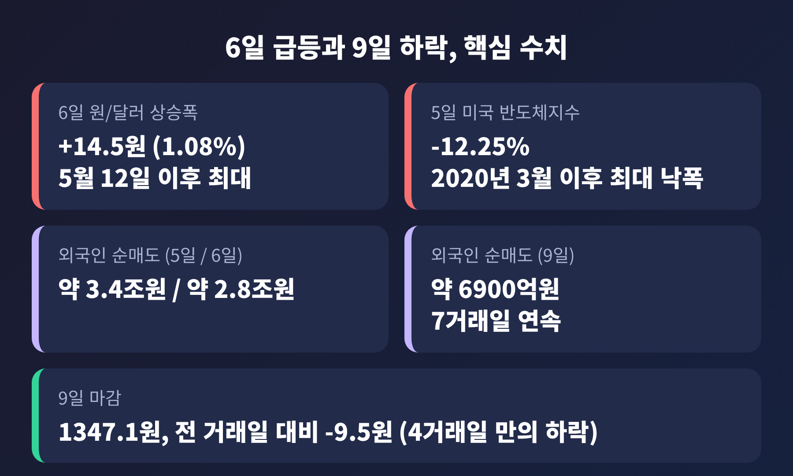
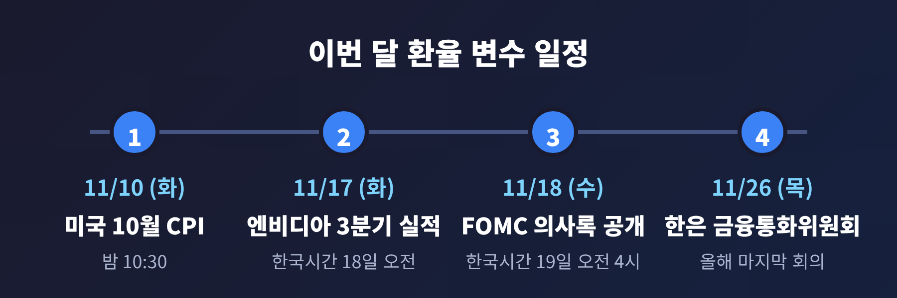
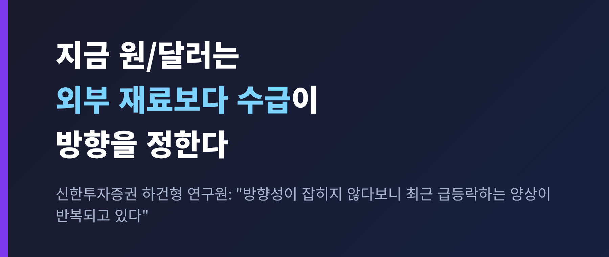

이번 글에서는 11월 6일 급등했던 원/달러가 9일 하루 만에 9.5원 되돌려진 과정을 정리해 보겠습니다.
외국인의 주식 매도와 미국 AI 규제 공포가 밀어 올린 환율을, 수출업체의 매도 물량이 어떻게 눌렀는지 살펴봅니다.
한눈에 보기
- 6일 원/달러는 14.5원 올라 1356.6원, 5월 12일 이후 약 6개월 만의 최대 일간 상승폭이었습니다.
- 9일에는 1363.0원에 출발했지만 9.5원 내린 1347.1원에 마감했습니다. 4거래일 만의 하락입니다.
- 이 시장은 지금 외부 재료보다 수급이 방향을 정하고 있습니다. 변동성은 당분간 이어질 수 있다는 전망이 우세합니다.
먼저 숫자부터 짚겠습니다.
5일 1342.1원이던 원/달러는 6일 오후 3시 30분 기준 1356.6원으로 올랐습니다. 하루 상승률은 1.08%입니다.
이데일리·디지털타임스·서울신문 등이 같은 수치를 전했습니다.
종가 기준으로 1350원대에 올라선 것은 10월 2일 이후 5주 만입니다. 장중 고점은 1362.2원이었습니다.
주말을 지난 9일 월요일에는 1363.0원으로 문을 열었습니다.
미국 10월 고용지표가 좋게 나온 영향이었습니다. 비농업 고용은 16만 5000명 늘었고 실업률은 4.1%였습니다(베타뉴스).
그러나 장중 흐름이 뒤집혔습니다. 오후에는 1340원대로 내려섰고, 종가는 1347.1원이었습니다.
전 거래일보다 9.5원 낮은 값입니다. 오른 폭의 3분의 2 가까이를 하루 만에 돌려준 셈입니다.

환율 수치와 관련해 한 가지 짚을 점이 있습니다. 뉴스1은 9일 제목에 "16원 하락"이라고 적었습니다.
본문 수치를 보면 시가 1363.0원 대비로 보입니다. 전 거래일 종가 대비 하락폭은 9.5원이며, 이 글은 이 기준을 따릅니다.
출발점은 미국이었습니다.
5일(현지시간) 필라델피아 반도체지수가 12.25% 폭락해 2020년 3월 이후 최대 낙폭을 기록했습니다.
나스닥은 5.52%, S&P500은 4.36% 떨어졌습니다. 나스닥과 S&P500의 낙폭은 2025년 4월 상호관세 발표 직후 이후 가장 컸습니다(서울신문).
배경으로는 중간선거가 거론됩니다.
민주당이 상·하원을 모두 장악하면서 AI 데이터센터 건설 규제가 강화될 수 있다는 관측이 번졌습니다.
데이터센터 가동이 늦어지면 AI 서버용 메모리 수요가 줄 수 있다는 우려로 이어졌습니다(머니투데이).
국내에서는 코스피가 6일 6.02% 내린 5059.69에 마감했습니다.
장중 4911.28까지 밀려 5000선이 무너졌고, 서킷브레이커가 발동됐습니다(이데일리).
외국인은 5일 약 3조 4000억원, 6일 약 2조 8000억원을 순매도했습니다. 머니투데이 집계입니다.
주식을 판 대금이 달러로 바뀌면 그만큼 매수 수요가 늘어납니다. 이데일리는 이 경로가 원화에 부담을 줬다고 설명했습니다.
원인은 세 갈래로 요약됩니다. SBS와 베타뉴스, 서울파이낸스가 비슷한 설명을 내놨습니다.
첫째, 수출업체의 달러 매도입니다.
최근 1330~1340원대에서 움직이던 가격이 1360원 부근까지 튀자, 수출업체들이 이를 단기 고점으로 보고 보유 물량을 내놓았습니다.
하락이 시작되자 추격 매도가 이어졌다고 서울파이낸스는 전했습니다.
둘째, 외국인 매도 강도의 완화입니다.
9일 외국인은 유가증권시장에서 약 6900억원을 팔아 7거래일 연속 순매도였습니다.
그래도 5일과 6일의 3조원 안팎에 비하면 훨씬 약해진 규모입니다.
셋째, 미국 기술주의 반등입니다. 위험선호가 일부 살아나면서 오름세가 제한됐습니다.
주목할 대목이 있습니다. 달러는 강했는데도 원화는 반등했다는 점입니다.
고용지표 이후 연준의 12월 금리 인상 기대가 커졌고, 달러인덱스는 102선을 넘었습니다.
그런데도 9일 달러인덱스는 오히려 소폭 내렸고(베타뉴스), 원/달러는 내렸습니다.
미국 달러 자체보다 국내 수급이 더 크게 작용한 하루였다는 얘기입니다.
이번 장면은 일회성이 아닐 수 있다는 분석이 있습니다.

서울파이낸스에 따르면 수출업체의 환전은 예전에는 월말에 몰렸습니다. 지금은 사상 최대 수준의 경상흑자 덕분에 바꿔야 할 외화가 늘 쌓여 있어, 가격이 한쪽으로 움직일 때마다 매도가 쏟아진다는 것입니다.
9월 경상수지 흑자는 614억 6천만달러로 처음 600억달러를 넘었습니다. 상품수지 흑자는 627억 5천만달러로 역대 1위였습니다(머니투데이·SBS Biz 등 보도 제목 기준).
우리은행 민경원 연구원은 수출업체 매도가 "상시 대기 수요로 전환"되고 있다고 봤습니다.
추가 반등을 기다리지 않고 바로 매도에 나설 수 있다는 뜻입니다. 세계일보가 뉴시스를 인용해 전했습니다.
신한투자증권 하건형 연구원의 진단은 이렇습니다.
"방향성이 잡히지 않다보니 최근 급등락하는 양상이 반복되고 있다."
외부 변수보다 수급에 민감해졌다는 것입니다.
한계도 분명합니다.
세계일보는 수입업체의 결제성 매수와 거주자의 해외주식 투자 증가가 반대로 가격을 밀어 올린다고 적었습니다.
위에서 누르는 힘과 아래에서 받치는 힘이 팽팽한 시장이라는 뜻입니다.
KB국민은행은 11월 2일 주간 전망에서 1,320~1,360원 범위를 제시했습니다.
같은 보고서는 코스피와의 동행성을 설명했습니다. 증시가 내리면 외국인의 환 헤지 청산으로 달러 매도가 나와 하락 압력이 생긴다는 논리입니다.
실제 6일은 달랐습니다. 증시가 폭락했는데 원/달러는 크게 올랐습니다.
이날은 외국인 주식 매도 대금의 환전과 위험회피가 더 강하게 작용했다고 이데일리는 짚었습니다.
한 가지 논리가 매일 맞지는 않는다는 점을 보여주는 사례입니다.
다만 KB의 범위 상단인 1360원 부근에서 가격이 되돌려졌다는 점은 눈여겨볼 만합니다.

환율을 흔들 가장 가까운 일정은 10일 밤 10시 30분(한국시간) 발표되는 미국 10월 소비자물가지수입니다.
17일에는 엔비디아 3분기 실적이 있고, 26일에는 올해 마지막 한국은행 금융통화위원회가 열립니다(이슈온).

연말 배당 송금도 변수입니다.
한국씨티은행은 11월 말부터 12월까지 외국인의 배당 역송금을 98억~126억달러로 추산했습니다.
통상 배당이 몰리는 4~5월보다 훨씬 큰 규모라고 머니투데이는 전했습니다.
환율 전망에 관한 전문가 시각은 엇갈립니다.
하나은행 이유정 연구원은 트럼프 정책 불확실성, 연준의 추가 긴축 가능성, AI 심리 악화를 상방 위험으로 꼽았습니다.
"당분간 변동성 장세는 이어질 것"이라는 전망입니다. 1300원대 초반으로 내려가려면 연준의 인상 사이클이 끝나고 외국인 자금이 돌아와야 한다고도 했습니다(디지털타임스).
반면 머니투데이는 연준이 내년 금리를 동결하고 한은의 인상 기조가 이어지면 원화 강세 효과가 나타날 수 있다는 관측을 소개했습니다.
반도체 성과급과 법인세 납부가 몰리는 내년 1분기에는 하락 가능성이 높다는 분석도 함께 전했습니다.
확인되지 않은 부분도 있습니다.
세계일보는 이번 고용 증가가 시장 전망의 3배 가까이라고 했지만, 전망치 수치는 다른 소스에서 확인하지 못했습니다.
11월 1~10일 수출 통계는 아직 발표 전입니다.
정리하면 이렇습니다.
6일의 급등은 미국발 충격과 외국인 매도가 만들었고, 9일의 하락은 수출업체의 달러 매도가 만들었습니다.

결국 남는 것은 하나입니다. 숫자 하나보다, 그 숫자를 움직이는 힘의 균형을 읽는 일입니다.
CPI와 외국인 수급 앞에서 이 균형이 다시 기울지, 다음 한 주가 그 답을 먼저 보여줄 것입니다.
※ 이 글은 공개된 보도를 바탕으로 한 정보 제공용 해설이며, 투자 권유가 아닙니다. 환전·투자 결정과 그 결과에 대한 책임은 본인에게 있습니다.
참고: 이데일리·서울신문·디지털타임스·재경일보(11/6), 머니투데이(11/8), 베타뉴스·SBS·서울파이낸스·세계일보·뉴스1(11/9), KB국민은행 KB의 생각(11/2), 이슈온(11/5)